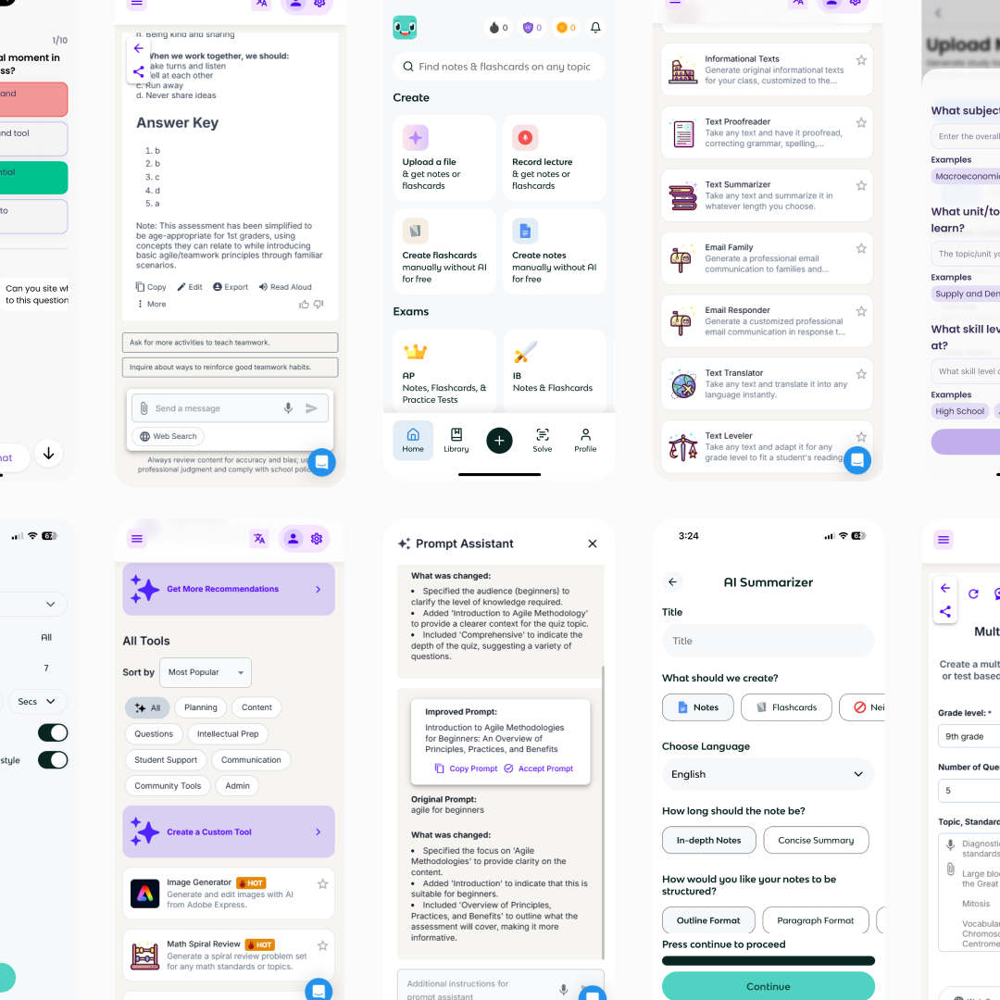
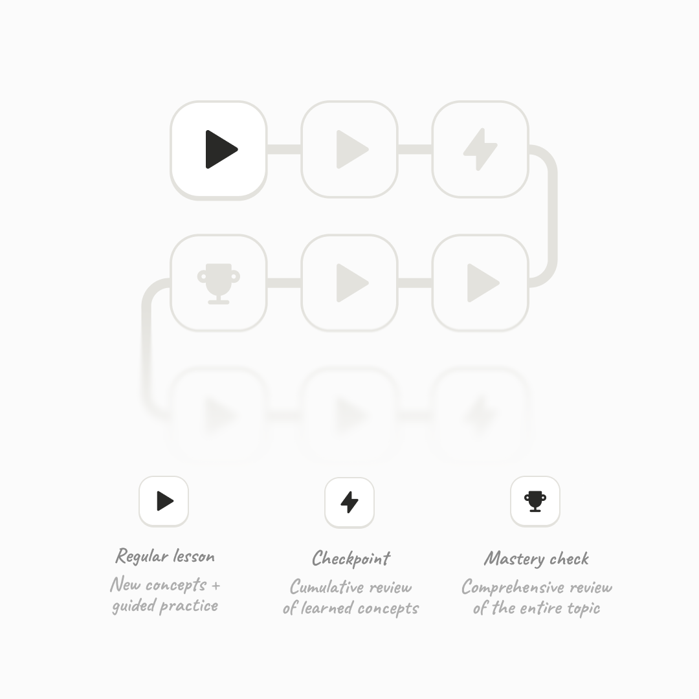
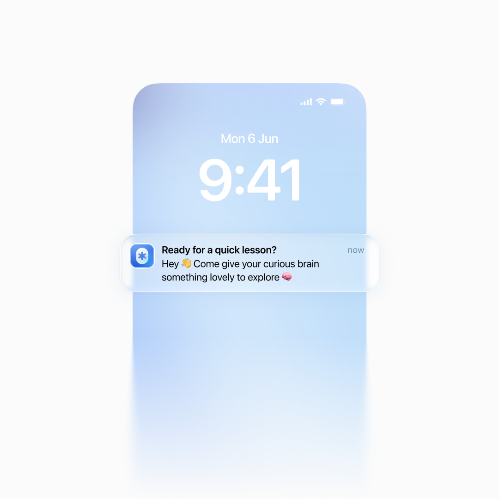
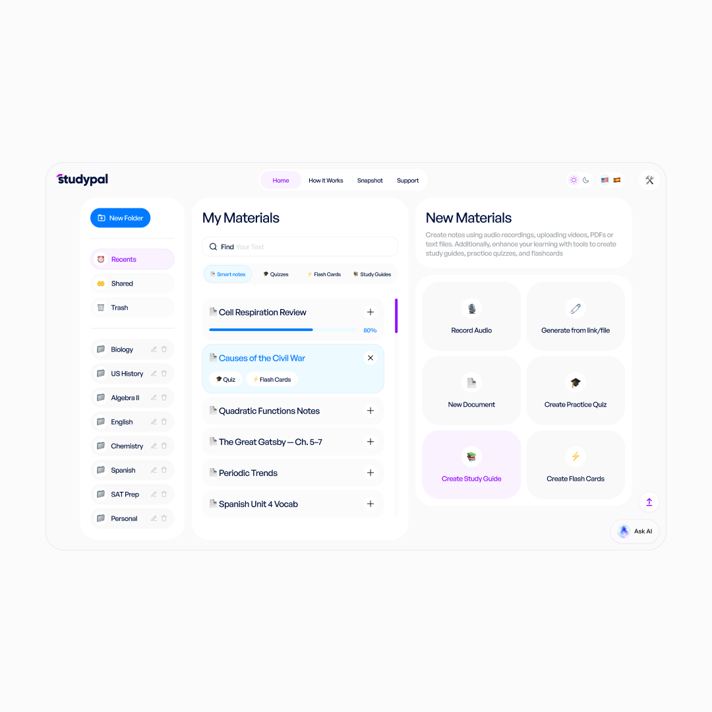
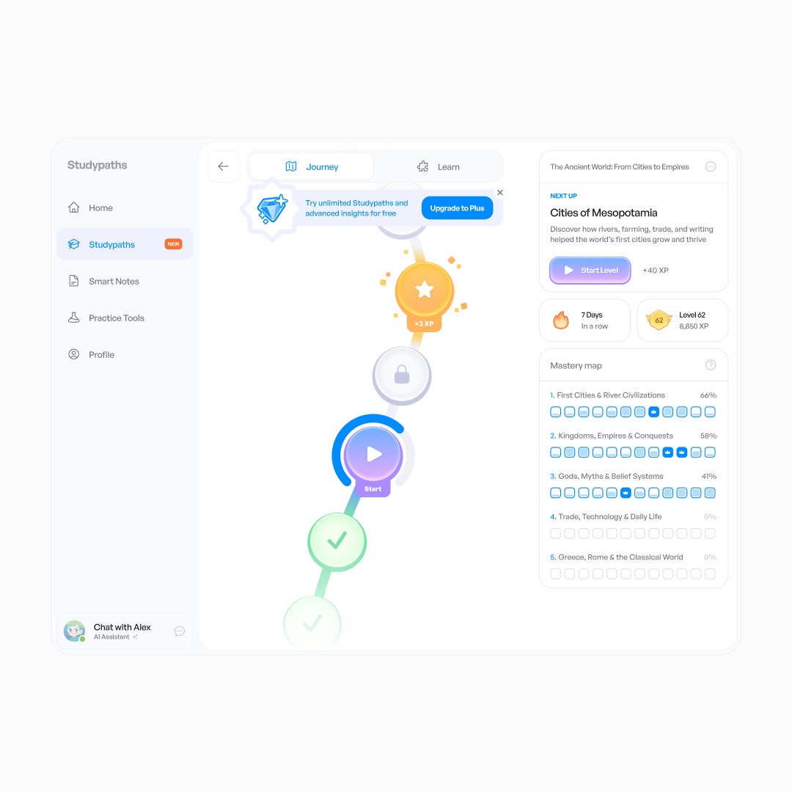
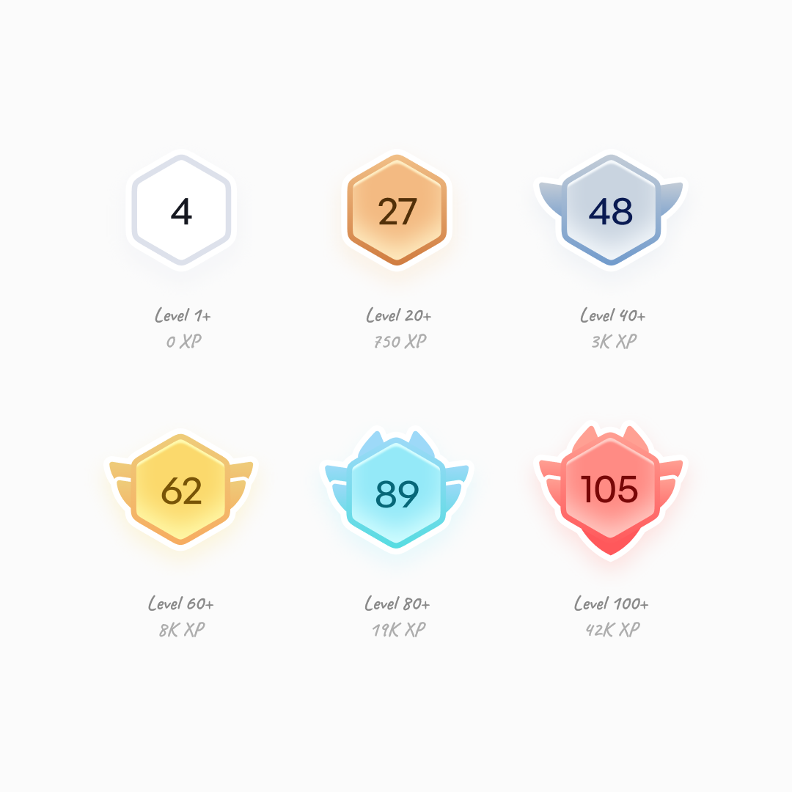
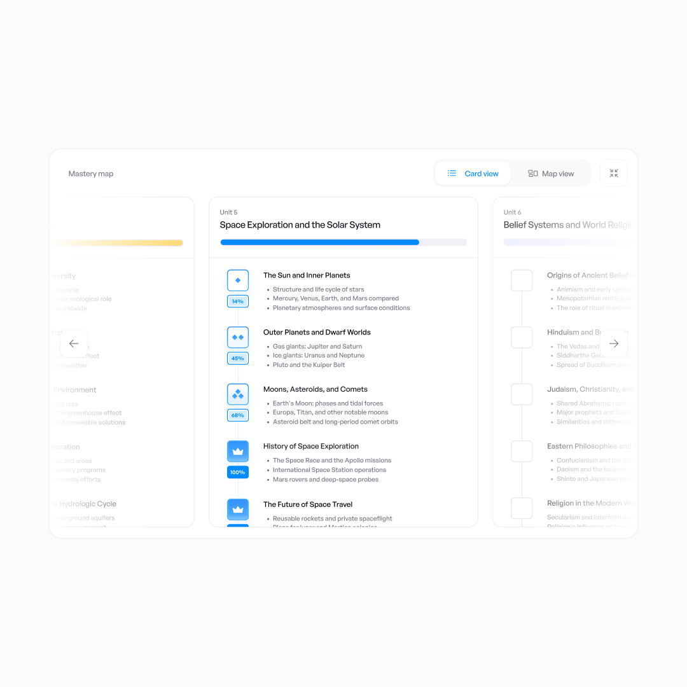
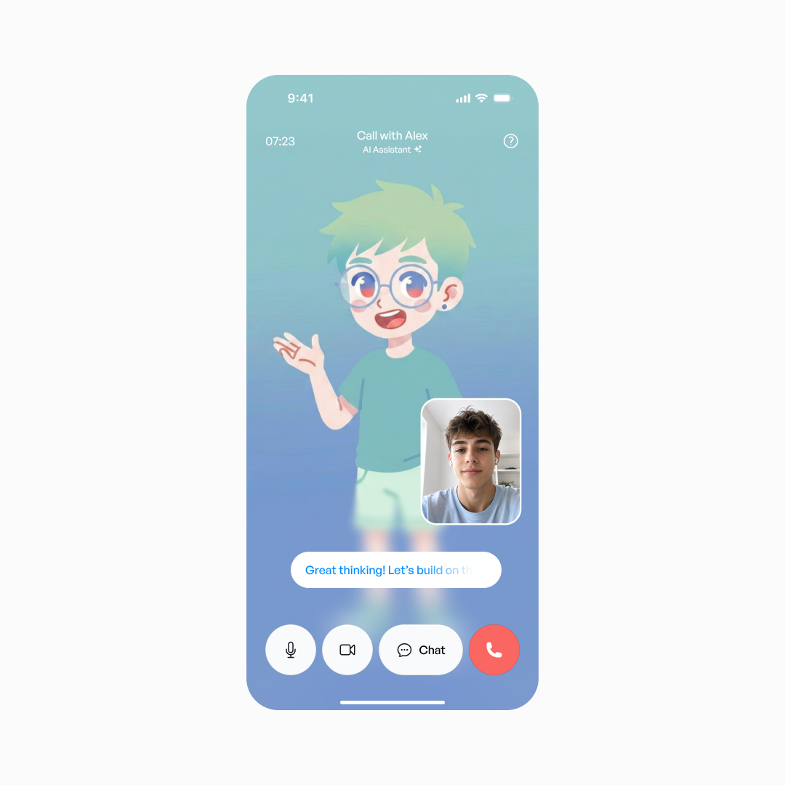

Lexie × Studypaths — redesigning the app for 150K+ users
An AI-guided learning concept that moved from a master's thesis into an American product used worldwide.
I designed Lexie to turn uploaded materials into a game path of bite-sized stages, guided by an adaptive AI tutor.
The team behind a similar product with 150,000+ registered users offered to acquire it. Instead, I joined them to introduce a new game-path mode without disrupting existing users.
First-lesson completion rose from 38% to 49% in an A/B test. The path eventually gave the product its name.
The gap I wanted to close
If you've ever tried to teach yourself something, you know the problem usually isn't a lack of information, but a lack of guidance.
Across 15 interviews and a survey of around 200 people, a recurring problem emerged: materials were ready, but learners didn't know where to start or what to do next.
In the flows I reviewed then, tools like StudyFetch and Knowt created flashcards and quizzes from uploads but left much of the organization to the learner.

With competitors, setup felt like half the learning journey
On the other side, Duolingo, Mimo, and Brilliant offered polished, gamified paths through prepared programs.
So I combined the best of both: user-owned materials, a low-friction start, and a guided game path.
Problem one: hard to start
The goal was to reduce actions and decisions and get people learning quickly. First came onboarding: I kept it short.
Just enough onboarding to get out of the way
Next, course creation. Learners may not know a subject well enough to configure a course in detail, so I let Lexie make those decisions from a natural-language prompt instead of complex settings.
A slider lets you adjust the course depth
There is a tradeoff: less control upfront, but an easier start. Deeper customization could come later.
Problem two: hard to keep moving
My survey pointed to short mobile sessions — during a commute or before bed. I built a path of small stages around chunking, retrieval practice, and spacing: manageable topics, practice after mistakes, and review over time.
The user taps “Continue learning” and Lexie chooses what comes next.

The anatomy of a game path
Exercises included matching pairs and filling gaps, with explanations tied to the material.
Every answer, right or wrong, comes with an explanation
I also added “Review the Concept” and flashcards, so learners could work through an explanation before testing themselves.
Concept cards break a difficult topic into smaller parts
Each stage ends with encouragement and progress numbers, regardless of the result.
Different result messages keep things from feeling repetitive
Problem three: helping without giving the answer away
The tutor was designed to account for weak points and mistakes, provide relevant examples, and encourage learners when stuck.
In tests, early hints interrupted people still thinking, while a tucked-away chat didn't help those already stuck.
Hints are generated on the fly, with a ready-made prompt for further help in chat
After three rounds of testing, I settled on a starting rule: a hint appears after 45 seconds of inactivity following a wrong attempt, or after 90 seconds with no attempt — and never when new material first appears.
A reason to come back
The final details included a daily streak counter, plus reminders users could schedule — or leave up to the app.

Lexie adapts reminder timing to when you usually open it
The plot twist
Shortly before my thesis defense, Studypal — an American startup — approached the studio where I worked to redesign its product. Its app let users upload materials and create quizzes and flashcards — exactly the space I already knew well.

Before the redesign, Studypal was a collection of study tools
I joined the team to lead the redesign. Lexie’s approach now had to work alongside existing habits.
How I redesigned Studypal
A product audit and user survey revealed two needs: new users wanted direction, while returning users often knew which tool they needed.
I kept the existing tools available on their own and used them as the foundation of Studypaths. Newcomers got a guided start. Familiar workflows stayed accessible.
Whoops, spoiler: Studypal becomes Studypaths later in the story
I defined the core learning experience and overall design direction. The other two designers extended that direction across the remaining flows and broader visual system.
I also defined AI response states and examples with engineers. We reviewed generations across different materials, including how the tutor should respond when the source couldn't support an answer.

The main screen after the redesign
With the core path in place, I added bonus stages every seven to twelve stages, awarding extra XP. A compact mastery overview shows progress through the course.
A yummy bonus stage rewards progress and encourages another step
Daily streaks showed regularity, but not accumulated activity. I added six milestones, each with a different decorative frame around the level number.
New users level up quickly. Later milestones take longer. Topic mastery stays separate from XP.

The final frame takes 1,050 stages, roughly 122 hours of learning
What didn't make it
Not every addition earned its place. One example was a detailed course map. I thought it would provide context, but in tests people returned to the compact overview. The expanded map didn't help them choose their next step.

Diamond completion icons did not survive testing either
A live AI call had received positive survey feedback. But waiting several seconds after each turn broke the conversation in the prototype. Combined with its cost, that put it back in the backlog.

Behind the simple UI, several AI models coordinate in real time
Outcome
In an A/B test with 3,200 new users, 49% completed their first lesson within 24 hours of signing up, compared with 38% in the control group — eleven percentage points higher. The test covered the new start and game path together.
The redesign gradually became available to all 150,000+ registered accounts. Support received more questions and positive feedback about Studypaths, and the founders soon renamed Studypal to Studypaths.
What I'd do differently
I'd check AI content quality and recall after several days earlier. First-lesson completion showed an easier start. It didn't tell us how much people learned.
Still, there is something deeply satisfying about having moved on from the team while Studypaths remains the product's core experience.